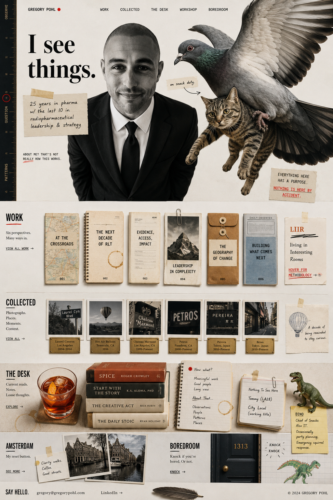
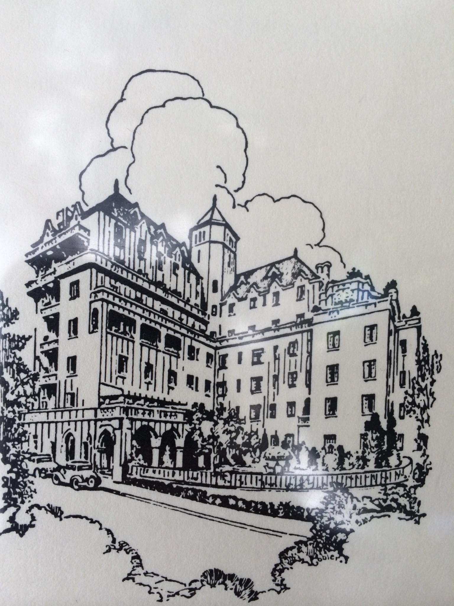
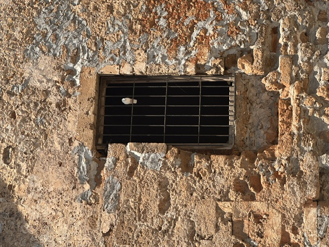
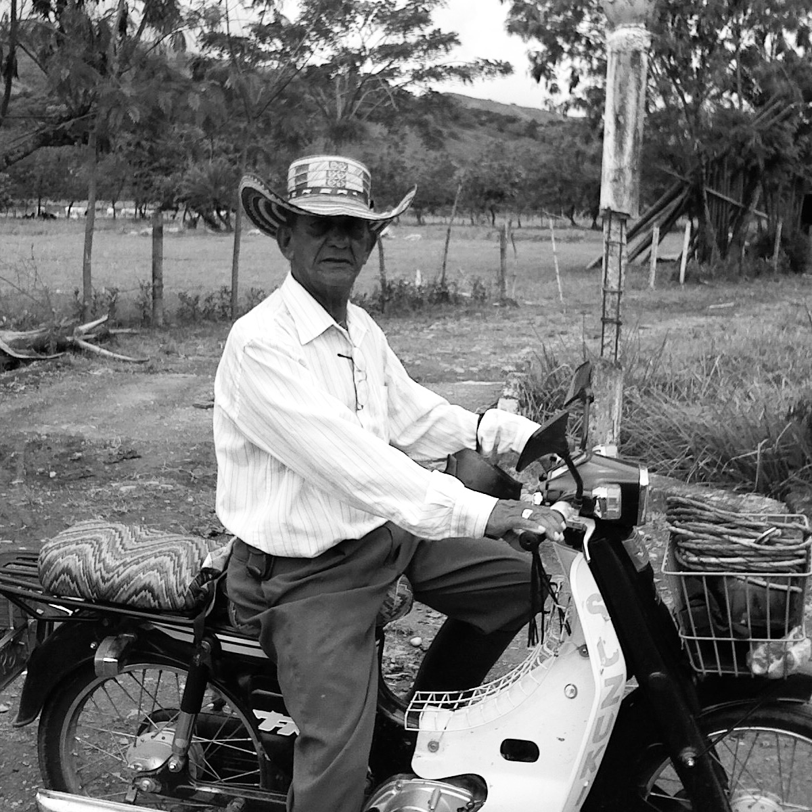
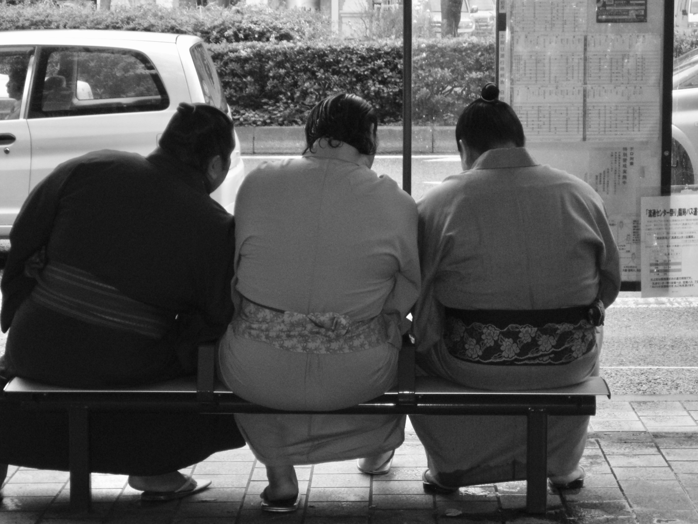

Work
Collected
The Desk
Workshop
Boredroom
What If Your Facts Are Wrong?
The Second Wave Should Go Narrow
The Shadow Game
The Coordination Problem
The Market Is Terrain, Not Author
Choose the Work
We lived in the same apartment as Jim Morrison, so we’d routinely wake up to find tourists taking pictures of our front door.
This selfie was taken by my then 4-year-old daughter on 2/23/22. The way the Valentine’s balloon hung above her head was beautiful in a way that I can’t put my finger on. We blew up the photo to nearly five feet, and it hangs in our hallway.

08.17.14
Chateau Marmont
West Hollywood, CA
The garden was encased in ivy. On Sunset, a few feet away, the city kept moving — you could barely hear it. Something about being there made you feel like you could do anything. And the fries were incredible.

07.17.26
Chania, Crete
While reflecting on the blockade of an Israeli cruise ship in 2025, Petros said, “Let them eat.”

01.28.08
Pereira, Colombia
“There is nothing equivalent to the profound sadness of a life ended that’s been lived wasted.” That was the loose interpretation spoken by this farm worker while on a plantation tour in the outskirts of Pereira, Colombia. We were talking about the lifecycles of coffee beans. Reflection is a funny thing. You can see it everywhere when you’re looking.

11.17.09
Ryoguku Kokugikan
Tokyo, Japan
I visited Tokyo on a whim back when there would be weekly sale fares. I spent the morning in Tsukiji Market before attending a sumo competition in the afternoon.
LIIR methodology
The Red Dot story
↖
The Negroni
Now what?
Workshop
Dino
Feather
Email Gregory
LinkedIn
Knock on the Boredroom door
×